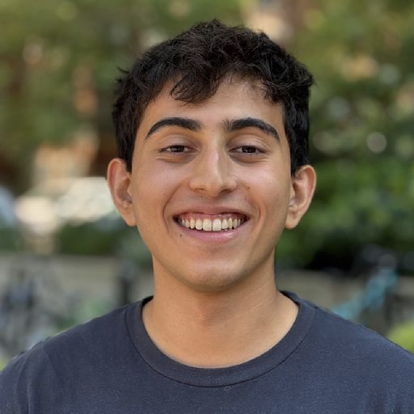

Aditya Singh
Hi, I'm Aditya! I'm currently a MATS research fellow, supervised by Senthooran Rajamanoharan and Neel Nanda, where I worked on Model Forensics — the science of investigating if concerning behavior is real misalignment. I'll be joining the Anthropic Fellows program in August 2026.
If you'd like to chat, please reach out — email is easiest, or you can book a time directly on my Calendly.
Papers & blog posts
- Model Forensics: Determining Whether Concerning Behavior Reflects Misalignment ICML 2026 Mechanistic Interpretability Workshop
- The Case for Model Forensics LessWrong, 2026
- How to Design Environments for Understanding Model Motives LessWrong, 2026
- Why Did My Model Do That? Model Forensics for Diagnosing LLM Misbehavior LessWrong, 2026
- Principled Interpretability of Reward Hacking in Closed Frontier Models LessWrong, 2026
- Automatically Finding Rule-Based Neurons in OthelloGPT NeurIPS 2025 Mechanistic Interpretability Workshop
- Concept Incongruence: An Exploration of Time and Death in Role Playing NeurIPS 2025
- Lessons from Studying Model Organisms of Hidden Behavior XLab Summer Research Fellowship Report, 2025
Talks
- Model Forensics ControlConf 2026